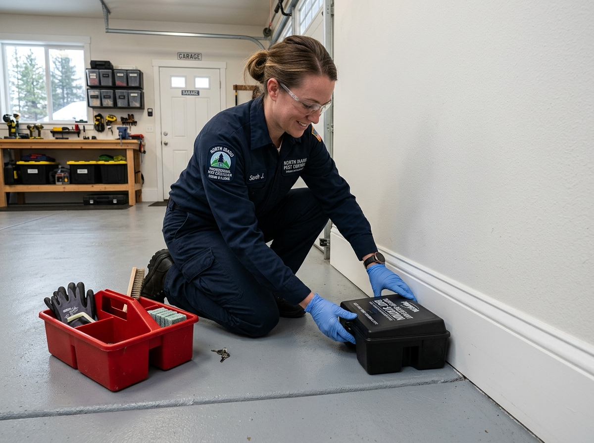

Homes With Attics and Crawl Spaces
They are quiet, dark, and insulated, which is ideal for nesting. Rodents also tear up attic insulation to build nests.
Rodents hide, so you may hear or find signs long before you see one. One mouse is rarely just one mouse.
Professional inspection note: One sign doesn’t show how big the problem is. An inspection finds where rodents are getting in and which areas need attention.
Mouse droppings are about the size of a grain of rice. Rat droppings are larger, about the size of a raisin. Deer mice, common in the Pacific Northwest, can carry hantavirus, so don’t sweep or vacuum dry droppings. Wear gloves, wet the area with disinfectant, and wipe it up with paper towels.
Rodents come in for food, water, and a warm, protected place to nest. Cold North Idaho nights push them toward buildings in the fall. Here is what we check.
They are quiet, dark, and insulated, which is ideal for nesting. Rodents also tear up attic insulation to build nests.
Boxes, stored items, and vehicles offer shelter. An open door or a worn door seal gives easy access.
Mice fit through gaps about ¼ inch wide, and rats through gaps about ½ inch. Common entry points are around doors, vents, pipes, foundations, rooflines, and utility lines.
Pet food, birdseed, open trash cans, and compost draw rodents to your property.
Overgrown shrubs, wood piles, and stored materials give rodents cover right next to the wall. Homes near Hayden Lake, Spirit Lake, Athol, and Rathdrum often sit close to trees and fields, where more rodents live.
A 7-step process to find active areas, seal openings, and keep rodents out
Call (208) 248-2701. Tell us what you’ve seen or heard and where, such as the attic, garage, kitchen, or crawl space. Photos of droppings or damage help.
We check attics, garages, crawl spaces, kitchens, walls, and the outside of the building for droppings, nests, gnaw marks, travel routes, and entry points.
We find where rodents are entering, traveling, hiding, and nesting, and whether you have mice, deer mice, or rats. Each needs a different method.
We choose the method based on what the inspection shows. This may include traps along travel routes, monitoring stations, and bait stations where the label allows.
We identify every opening and explain how to seal it. Sealing is what keeps rodents out, because trapping alone won’t stop new ones from coming in.
We tell you what to change around the property: food, clutter, wood piles, plants, and gaps.
Rodents rarely clear out in one visit. We check traps and stations and adjust the plan as needed.
Catching the mouse you saw is not enough. If the entry points stay open, new rodents replace the ones you catch.
The goal is to find the source of the activity and fix what lets rodents stay.

The price depends on the property and how active the rodents are. We inspect first, so you know what’s needed before work starts.
We provide rodent control across Kootenai County and nearby North Idaho communities:
ZIP codes 83814 and 83815
Residential and commercial
Lakefront and wooded homes
Homes and businesses
Prairie and foothill properties
Acreage and outbuildings
North Kootenai County
Lake and rural properties
If you find droppings, hear scratching, or see mice or rats in your property, call us. We’ll tell you what to do next.
Control handles the rodents you have. Closing gaps and removing food and shelter keeps new ones out.
Check around doors, windows, foundations, vents, pipes, and utility lines. Use metal mesh or steel wool, not just foam or tape, because rodents chew through them. Replace worn garage door seals.
Store food and pet food in sealed glass, metal, or hard plastic containers. Wipe up crumbs and spills the same day.
Use lidded trash cans, take out food waste often, and don’t leave birdseed or pet food outside overnight.
Use plastic bins instead of cardboard in garages, sheds, and storage. Fewer hiding spots means fewer nests.
Keep firewood away from the house and off the ground, not stacked against a wall.
Cut back shrubs and branches so they don’t touch the walls or roof.
Look a few times a year for droppings, nests, and gnaw marks. Early signs are easier to deal with.
Rodents are more active outdoors and breed. Nests may show up in sheds, garages, and wood piles.
Rodents live around landscaping, sheds, garages, and outbuildings. Open doors and food scraps make it easy for them to come in.
The most important season. Cooler nights send mice and rats toward warm buildings, so seal gaps now.
Rodents already inside stay active in attics, walls, and kitchens, and keep breeding. Scratching at night is common.
Attics are quiet and insulated, so mice can nest unnoticed.
We find where they get in, deal with the activity, and explain what to seal and clean.
Boxes, stored items, and open doors give rodents shelter and easy access.
We check stored items, corners, and gaps around the garage door and foundation.
Noise at night in the walls or ceiling usually means rodents moving or nesting.
We inspect walls, attics, and crawl spaces to find the nest and the route in.
Droppings in kitchens, storage, garages, or attics show where rodents travel and feed.
We use them to trace the activity and find what needs sealing.
An unsealed entry point, open food source, or leftover nest keeps drawing new rodents.
We find the openings, plan to seal them, and check traps and stations until activity stops.
Kitchens, pantries, pet food, and garbage attract rodents when food is easy to reach.
We find the source and show you how to secure food and trash.

Why a professional approach lasts longer than quick traps
We tell whether droppings, gnaw marks, and nests are from mice, deer mice, or rats, because each needs a different method.
Finding how rodents get in is what makes control last.
We inspect attics, garages, crawl spaces, and walls for movement and nests.
We look at food, moisture, clutter, plants, and openings that keep rodents coming back.
We find why rodents keep returning and which areas still need work.
Common questions regarding mouse and rat behavior, inspections, and treatments in Coeur d'Alene.
The most common rodents encountered in Coeur d'Alene and North Idaho homes are Deer Mice (Peromyscus maniculatus), House Mice (Mus musculus), and Norway Rats. In wooded and rural outskirts, roof rats, pack rats (bushy-tailed woodrats), and voles also frequently invade crawl spaces, outbuildings, and attics.
Rodents are drawn indoors by warmth, shelter, food, and water—especially as autumn temperatures plummet. Common attractants include unsealed pet food, bird seed, compost bins, fruit dropped from trees, cluttered storage areas, and unsealed entry points around foundations, crawl spaces, and garage door weatherstripping.
Yes. Waterfront and lake-adjacent properties tend to experience higher rodent pressure due to abundant natural vegetation, rock riprap, boat docks, crawl-space dampness, and seasonal vacancies where rodents can nest undisturbed during the winter months.
Rodent control costs vary based on the severity of the infestation, home square footage, extent of structural exclusion repairs (sealing gaps larger than ¼ inch), and whether ongoing baiting or attic sanitation is required. We perform a detailed initial inspection and provide a transparent, upfront written estimate before beginning work.
Our rodent service includes an exhaustive full-property inspection (attics, crawl spaces, foundations, and garages), humane trapping and removal of existing rodents, critical exclusion sealing of exterior gaps using rodent-proof materials (copper mesh, hardware cloth, and sealant), and strategic placement of tamper-resistant exterior bait stations to prevent future invaders.
Early fall (September to November) is the most critical time, as rodents seek warm winter shelter before the first snowfall. However, rodent activity continues year-round in North Idaho, making late-winter nesting and early spring cleanups equally important to keep populations under control.
For homes in heavily wooded areas or near Lake Coeur d'Alene with persistent rodent pressure, recurring bi-monthly or quarterly exterior monitoring is strongly recommended to keep exterior bait stations serviced and monitor exclusion seals. For low-pressure suburban homes, an annual fall inspection and seasonal checkup may suffice.
Pest control across Coeur d’Alene and North Idaho
Treatment for kitchen ants and other common ants around homes and properties.
Treatment for carpenter ants in damp wood, decks, foundations, and wall spaces.
Treatment for spiders around windows, eaves, garages, sheds, and outdoor areas.
Treatment for fleas in carpets, pet areas, furniture, and other indoor spaces.
Control for roaches in kitchens, bathrooms, cabinets, and appliances.
Inspection and treatment for bed bugs in bedrooms, furniture, rentals, and other areas.
Don't let mice or rats continue nesting inside your property.
If you are finding droppings, hearing scratching sounds, noticing gnaw marks, or seeing rodents inside your home, contact us to discuss the activity and determine the appropriate next step.
Company: Pest Control Coeur d'Alene, ID
Phone: (208) 248-2701
Service Area: Coeur d'Alene and nearby North Idaho communities
Fill out the form below to schedule a property inspection or discuss your rodent concerns.